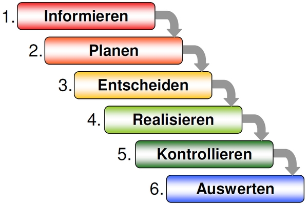

| Tag | Tätigkeiten | Zeit |
|---|---|---|
| Montag 17.08.2020 |
|
4h15min 1h 1h30min 30min 1h |
| Dienstag 18.08.2020 |
|
1h 3h45min 1h 1h 1h15min 15min |
| Mittwoch 19.08.2020 |
|
1h40min 2h45min 40min 2h40min 30min |
| Donnerstag 20.08.2020 |
|
20min 30min 1h20min 5h 50min |
In dieser ersten Arbeitswoche haben wir mit vielen spielerischen Aktivitäten die Namen der anderen
Auszubildenden gelernt. Zum Beispiel mit dem Spiel LifeStyle, welches wir unter der Anleitung von
Nadine und Bobby gespielt haben. Bei Bobby haben wir mit Tierfiguren unsere derzeitige Gefühlslage
beschrieben und in einem zweiten Durchlauf die erwartete Situation anhand eines zweiten Tieres.
Im Anschluss an die Assoziation mit den Tieren, durften wir von ausgewählten Mitlernenden positive
Eigenschaften aufschreiben und diese dann mitteilen. Ausserdem konnten wir Jugendliche mit
Ähnlichkeiten in unserem Leben suchen – anhand eines selbst geschriebenen Steckbriefes – damit
wir schneller neue Leute kennenlernen.
Auch wurden wir unter Anleitung von Robin damit betraut, unsere Notebooks/Laptops einzurichten.
Dazu gehörte das Einrichten einer WLAN Verbindung, des WebMail-Kontos sowie die Microsoft
Applikation «Teams», welche uns den Arbeitsalltag vereinfachen, und zudem die schnelle und
zuverlässige Kommunikation, sowie Auftragserteilung, gewährleisten soll. Das Anschliessen des
Laptops an einen Bildschirm gehörte ebenfalls zu diesen Tätigkeiten.
Ein bisschen Bewegung und Ortskenntnisse gehören dazu, weshalb von den Berufsbildnern ein
Postenlauf organisiert wurde, den wir in kleinen Gruppen absolvieren sollten. Die Route konnten wir
im Team planen, die zu besuchenden Posten waren jedoch vorgegeben.
Nach dem aufschlussreichen Postenlauf wurden wir damit beauftragt eine Präsentation
vorzubereiten, in welcher wir die wichtigsten Erkenntnisse festhalten sollten. Nach eben jener
genannten Präsentation spielten wir eine Runde Kahoot, um die Namen der anderen Auszubildenden
im Büro festigen zu können.
Im Anschluss hatten wir einen Block, in welchem es vor allem um die Erwartungen der Lernenden
und des Ausbildungsbetriebes ging. Wir diskutierten diverse wichtige Themen, um eine erfolgreiche
Zusammenarbeit gewährleisten zu können.
Wir haben jeden Tag Zeit erhalten, um am Arbeitsjournal arbeiten zu könnnen. Ausserdem haben wir
in mehreren Gruppen Flipchart-Präsentationen vorbereitet, um die wichtigsten Aspekte des
Leitfadens besser verstehen zu können und offene Fragen zu klären.
Bobby hat uns auch die Auszubildenden der oberen Lehrjahre vorgestellt, sowie deren Berufsbildner.
Auch mit ihm haben wir den Verhaltenskodex der Noser Gruppe gelesen und offene Fragen geklärt.
Bobby hat uns mit einer selbstständigen Einführung ins Office beauftragt und wir haben mit der
Bearbeitung der Einführung ins Office Programm «Word» begonnen.
Wir haben das ein Behauptungsspiel gespielt, bei welchem 2 richtige und eine falsche Behauptung
aufgeschrieben wurden, dies hat uns wieder neue Informationen zu unseren Mitlernenden gegeben
und hat zu vielen Lachern geführt. Ausserdem hat Robin uns eine Einführung ins binäre Zahlensystem
gegeben und wir konnten einige kurze Aufgaben dazu lösen. Ausserdem haben wir selbstständig das
Nutzungsreglement gelesen, die offenen Fragen geklärt und es dann unterschrieben, damit das KV
die Unterlagen einscannen kann.
Um herauszufinden wie wichtig Kommunikation effektiv ist, haben wir in Zweiergruppen Tangram
gespielt, dies sollte eine Vorbereitung auf die Arbeit mit Kunden sein, da es viele Fehler oder
Unklarheiten geben kann.
| Die IPERKA-Methode, eine Methodik zur systematischen Bearbeitung von Aufträgen. Die IPERKA-Methode umfasst sechs Arbeitsschritte, welche vom Sammeln von Informationen bis hin zur Ausführung, Kontrolle und Auswertung alle Schritte beinhaltet. Im folgenden Text wird die IPERKA-Methodik näher erläutert und es wird auf jeden der sechs Schritte näher eingegangen. |
 https://www.konstrukteur-in.ch/wp-content/uploads/iperka-600x400.jp |
{kind=link}